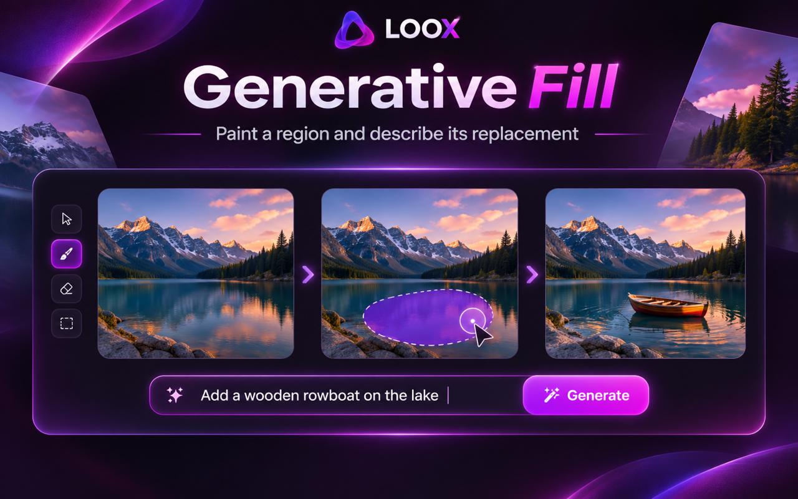

Write your prompt
Describe the subject, colors, mood and style you want. Clear details help the model interpret your idea.
LOOX creative AI • Powered by FLUX
Describe what you imagine and bring it to life with LOOX AI. From cinematic scenes to expressive artwork, generate images using our private FLUX-powered creative workspace.
Create with FLUX.1 Schnell. Sign in to use your credits and see images saved to your account. Generation is available while the LOOX AI service is online.

Easy from idea to image
Describe the subject, colors, mood and style you want. Clear details help the model interpret your idea.
Open the workspace and select square, portrait or landscape proportions. FLUX Schnell is the available model.
LOOX processes your image request. Once complete, download your PNG or find it again in your account history.